Qué hacemos, a quién se lo vendemos, cómo nos vemos hoy y qué te vamos a pedir. Escrito para quien nunca ha usado un programa de este tipo. Todo en un lugar, y sólo lo que es verdad al 30 de octubre de 2026.
Versión del 30-oct-2026 · Documento de trabajo para quien nos ayuda con la comunicación.
Las fotos son de una copia de prueba con datos inventados. Las ilustraciones de WhatsApp están marcadas como tales.
Qué es. Hilo Rojo es una empresa chilena que hace un asistente para WhatsApp. Un asistente es un programa de computador que lee los mensajes y los contesta, como lo haría un vendedor.
A quién se lo vendemos. A distribuidoras y mayoristas que ya venden por WhatsApp. Son empresas que le compran en cantidad a los fabricantes y le venden a otros negocios. Por ejemplo, la que le vende cloro y papel higiénico a colegios y edificios.
El problema. Un martes a las 21:10 el administrador de un edificio pide 10 bidones de cloro. La vendedora salió a las 18:00 y lo lee al otro día, a las 9:15. Para entonces él ya le compró a otro.
Lo que pasa con Hilo Rojo.
Del chat a la cotización, sin cortar el hilo.
| Estado | Qué quiere decir | Qué hay |
|---|---|---|
| hoy | Funciona y se puede mostrar en una demo, que es una prueba en vivo. | El asistente de WhatsApp. Como funciones extra, el equipo y sus avisos y la agenda de horas. |
| próximo | Lo estamos construyendo. Todavía no se vende y no tiene fecha. | El despacho (la ruta del día del reparto) y el inventario (el conteo). |
| ya viene luego | Está pensado, pero todavía no se trabaja. Tampoco tiene fecha. | Avisos con un código QR, entradas con QR, pagar en un punto y retirar en otro, y avisos de cobro. |
Dónde estamos. Estamos instalando con las primeras empresas. Todavía no hay clientes que paguen, así que no hay casos que mostrar y no se inventan. El precio no está decidido: ninguna pieza lleva precio. Una pieza es cada cosa que se publica o se entrega, como un folleto o una publicación de Instagram.
Qué te pedimos. Cuatro encargos: identidad visual, canales y campaña, redes sociales y sitio web (sección 10). Si una palabra no se entiende, está en el glosario, al final.
Hilo Rojo SpA es una empresa chilena de software (programas de computador), constituida en julio de 2026. La fundó Rob, a quien vas a ver nombrado en este manual. Hace un asistente que trabaja sobre el WhatsApp que la empresa ya usa: sus clientes escriben al número de siempre y nadie instala nada.
Lo que vendemos hoy es eso, para distribuidoras y mayoristas que ya venden por WhatsApp. La sección 3 explica desde cero qué son.
Cómo funciona. El cliente pregunta un precio. El asistente le contesta con el catálogo de la empresa, que es su lista de productos con precios, y arma la cotización en el mismo chat. Antes de que la cotización salga, un vendedor de la empresa la revisa y la aprueba. Ésa es la promesa central: el asistente atiende, pero el precio lo confirma una persona.
Del chat a la cotización, sin cortar el hilo.
| Pieza | Texto aprobado (decisiones de Rob, 29-oct) |
|---|---|
| Titular | Del chat a la cotización, sin cortar el hilo. |
| Bajada | Tu cliente pregunta el precio. Hilo Rojo arma la cotización. |
| Prueba | Un vendedor tuyo aprueba antes de que salga el PDF. |
| Primera línea de cada mensaje a un posible cliente | Deja de perder pedidos por WhatsApp. |
El problema que resolvemos, contado como lo vive un dueño. Los pedidos llegan por WhatsApp mezclados con saludos, fotos y «¿cuánto vale este otro?». Los atiende una sola persona. Cuando esa persona almuerza, se va a las 7 o renuncia, el cliente que escribió a las 10 de la noche le compra a otro.
Lo que también hace el mismo asistente. Ordena el trabajo interno de la empresa, esté el equipo en terreno (fuera de la oficina, por ejemplo en un evento), en la bodega, en la oficina o repartiendo. Maneja avisos de problemas, anuncios, tareas y consulta de stock, que es saber cuánto queda de cada producto. Lo próximo en esa línea es el despacho (la ruta del día del reparto) y el inventario (el conteo). Más adelante, avisar por WhatsApp cuando alguien escanea un código QR pegado en un lugar. Un código QR es el cuadrado de puntitos que se lee con la cámara del celular. Lo verás en la sección 2.
Lo base y lo extra. Lo que se vende primero es el asistente de WhatsApp: precio, carrito y cotización que aprueba una persona. Todo lo demás son funciones extra que se suman aparte, según lo que necesite cada empresa: el equipo y sus avisos, el inventario, el despacho, la agenda de horas, los avisos por QR.
Todo se vende bajo Hilo Rojo. Hay cuatro productos más, cada uno con su nombre, que van sin fecha. Uno es lo próximo y tres vienen luego:
| Nombre | Qué es | Frase | Estado |
|---|---|---|---|
| Hilo Rojo | La empresa, y el asistente de WhatsApp (cotización con aprobación y trabajo interno del equipo) | Del chat a la cotización, sin cortar el hilo. | hoy |
| Punto Rojo | Un QR pegado en un lugar: quien lo necesita deja un aviso y le llega al equipo que tiene que ir | Del QR al aviso, sin cortar el hilo. | ya viene luego · funciona en la copia de prueba; falta el primer piloto real |
| Pase Rojo | Entradas con QR y control en la puerta | De la compra a la puerta, sin cortar el hilo. | ya viene luego |
| Vale Rojo | Pagar en un punto y retirar en otro; canje de lo incluido | Del pago al retiro, sin cortar el hilo. | ya viene luego |
| Bodega Roja | Conteo y control de inventario | Del conteo al pedido, sin cortar el hilo. | próximo · lo estamos construyendo ahora |
Un piloto es la primera prueba con una empresa real. Un canje es entregar un vale y recibir lo que incluye.
El foco de la comunicación es Hilo Rojo (cotización por WhatsApp) y, después, Punto Rojo (alertas por QR). Los otros tres se muestran como lo hace el sitio: «Todavía no, y sin fecha», con una lista de espera.
Primero lo que ve el cliente de la empresa en su WhatsApp. Después lo que ve la empresa en su consola. Cada función parte por el problema, sigue con lo que pasa en orden y termina con lo que cambia para el dueño.
Las cinco primeras son el asistente base. Las del equipo, la agenda y los QR son funciones extra que se suman aparte.
El problema. Un cliente quiere saber cuánto sale un producto y escribe a la hora que puede. Si nadie le contesta, le compra a otro.
Además conversa con un nivel de humanidad: contesta con frases normales, como lo haría una persona.
Qué cambia para el dueño. Su negocio contesta a cualquier hora con sus propios precios. Nadie tiene que buscar la lista y copiar líneas a mano.
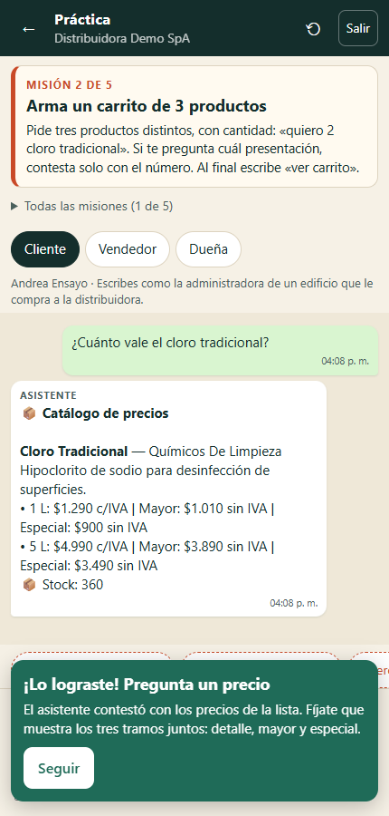
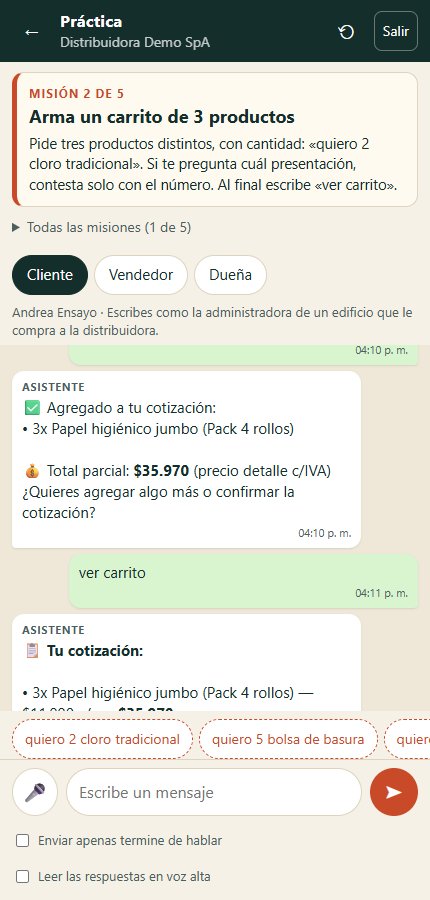
El problema. El dueño tiene miedo de que una máquina le dé un mal precio a un cliente. Y hoy su vendedor pasa el día copiando pedidos.
Si la empresa usa un sistema de ventas chileno, la cotización también puede quedar allá.
Qué cambia para el dueño. El asistente no inventa precios ni cierra nada solo. El vendedor deja de copiar pedidos y sólo revisa y aprueba.
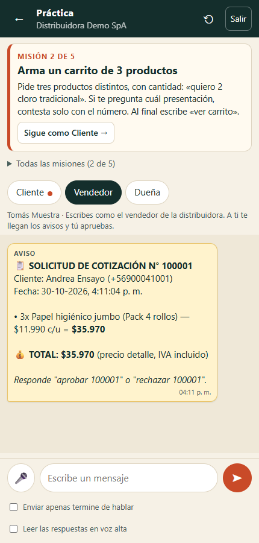
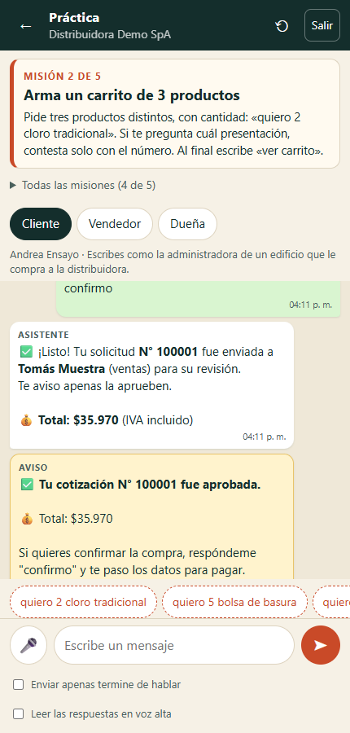
El problema. El comprobante de pago llega como una foto más en el chat. Alguien tiene que revisarlo y avisarle a quien reparte.
No hay pago con tarjeta en esta parte.
Factura y boleta. El asistente también puede emitirlas, sólo que no por su cuenta: lo hace conectándose a la API del sistema de ventas de la empresa, lo que también se llama CRM. Una API es una conexión entre dos programas (sección 4). El documento queda hecho en ese sistema. Sin esa conexión, la empresa lo sigue haciendo donde lo hace hoy.
Qué cambia para el dueño. El pago y el comprobante quedan junto a la cotización, en la misma conversación. Quienes despachan, es decir, quienes preparan y reparten el pedido, se enteran sin que nadie les reenvíe nada.
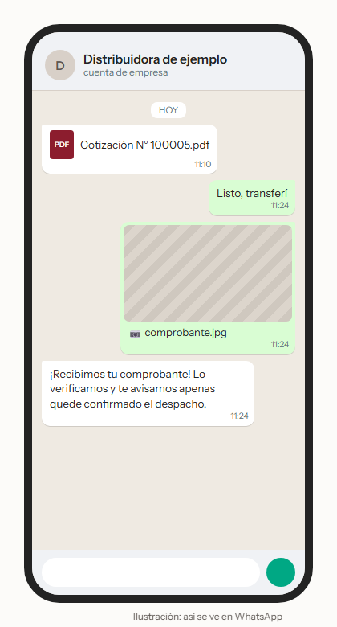
El problema. Nadie quiere quedar atrapado hablando con una máquina cuando necesita a una persona.
En la consola hay un interruptor, «Silenciar bot», para apagar el asistente con un cliente y volver a prenderlo después.
Qué cambia para el dueño. Su cliente nunca queda atrapado con una máquina, y su vendedor no parte de cero.
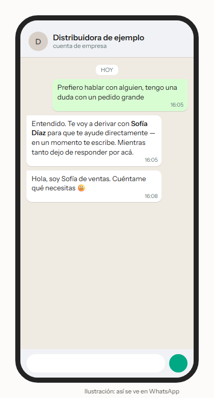
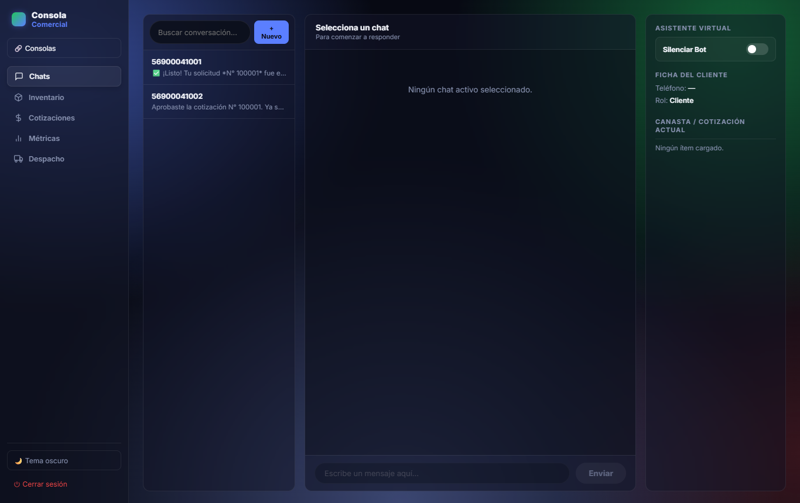
El problema. Los clientes preguntan una y otra vez lo mismo: el horario, la dirección, cómo se paga.
El cliente pregunta y el asistente contesta con lo que la empresa le dejó configurado, es decir, anotado una vez en el programa: horario, dirección, medios de pago y datos de la empresa.
Qué cambia para el dueño. Nadie tiene que contestar eso a mano.
El mismo asistente sirve para ordenar el trabajo de puertas adentro de una empresa, no sólo el de quien está en terreno: una productora de eventos, una constructora, una administración de edificios, un gimnasio, una distribuidora con su bodega y su reparto. Cada persona escribe al WhatsApp del equipo y el asistente ordena lo que llega.
Hoy cubre avisos, anuncios, tareas, reporte y consulta de stock de la bodega. Lo próximo, que es lo que se está construyendo ahora, es la ruta del día del reparto (despacho) y el conteo de inventario (Bodega Roja). Más adelante, los avisos por QR (Punto Rojo).
El problema. Entra una persona nueva. Hay que saber quién es, en qué área trabaja y si de verdad es del equipo.
El encargado también puede compartir contactos para invitarlos.
Qué cambia para el dueño. Nadie entra al equipo sin que un encargado lo apruebe.
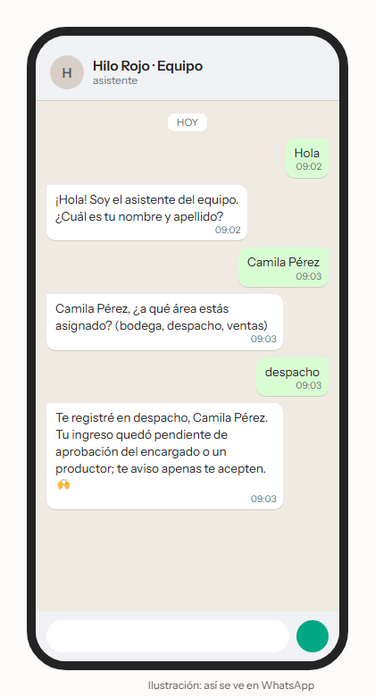
El problema. Se corta la luz en la bodega. Alguien lo escribe en un grupo de 20 personas y nadie confirma que lo vio. El jefe se entera tarde.
El plazo lo fija la empresa. Cualquiera puede preguntar en qué van sus avisos.
Qué cambia para el dueño. El problema deja de ahogarse en un grupo. Queda escrito quién avisó, quién lo tomó y cuánto se demoró.
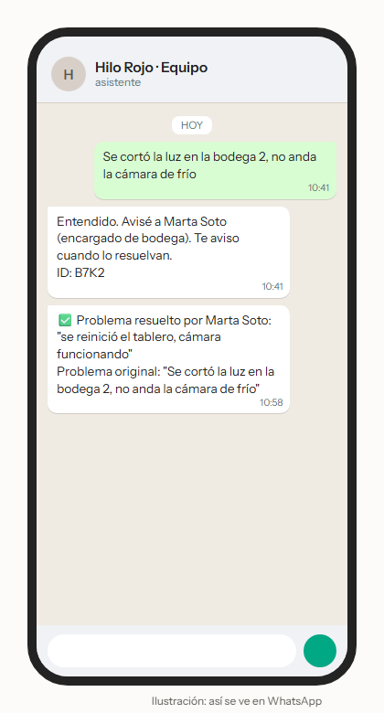
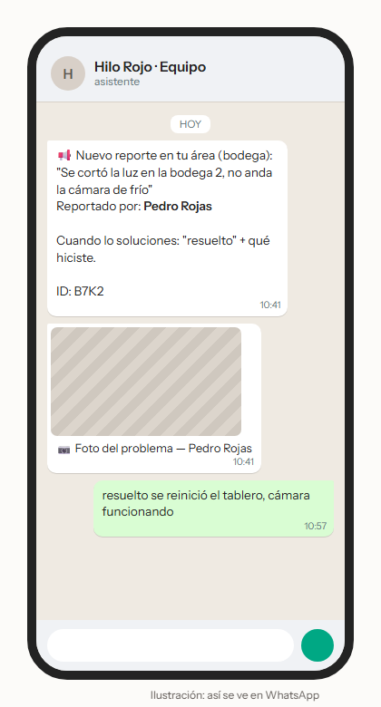
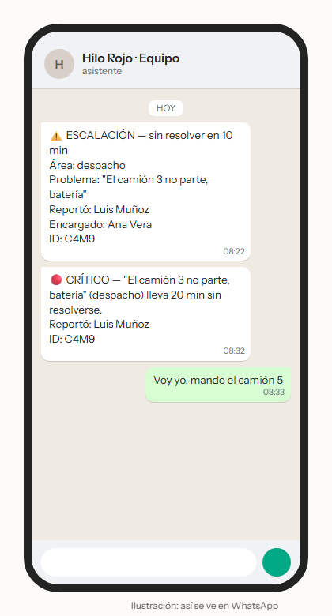
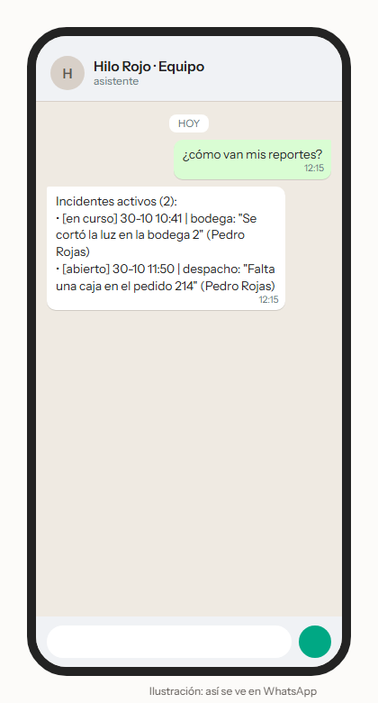
El problema. Hay que avisarle algo a todo el equipo, encargarle algo a alguien y, al final, saber qué pasó.
Qué cambia para el dueño. Lee en un solo reporte lo que pasó, en vez de reconstruirlo chat por chat.
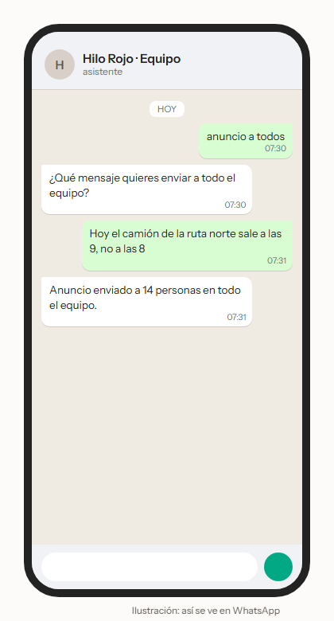
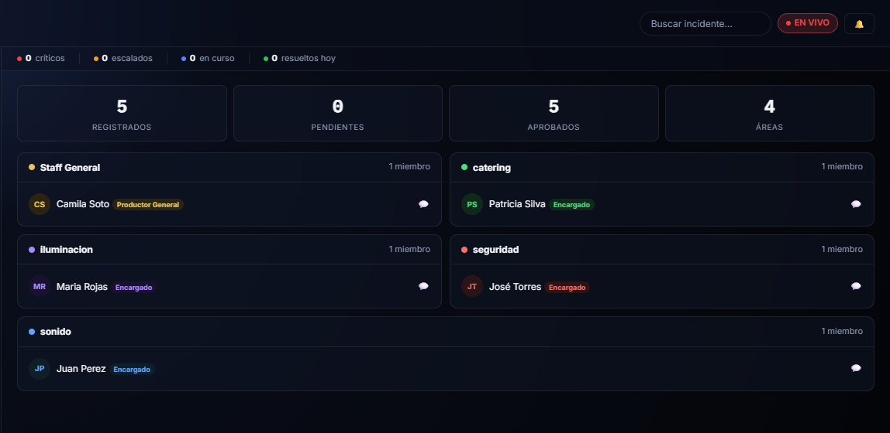
El problema. Alguien necesita ayuda en un baño, un piso o una entrada, y no sabe a quién avisarle.
No se guarda el nombre ni la ubicación del teléfono de quien escanea.
Qué cambiaría para el dueño. El aviso le llega solo al equipo que tiene que ir. Quien pide ayuda no necesita saber a quién llamar.
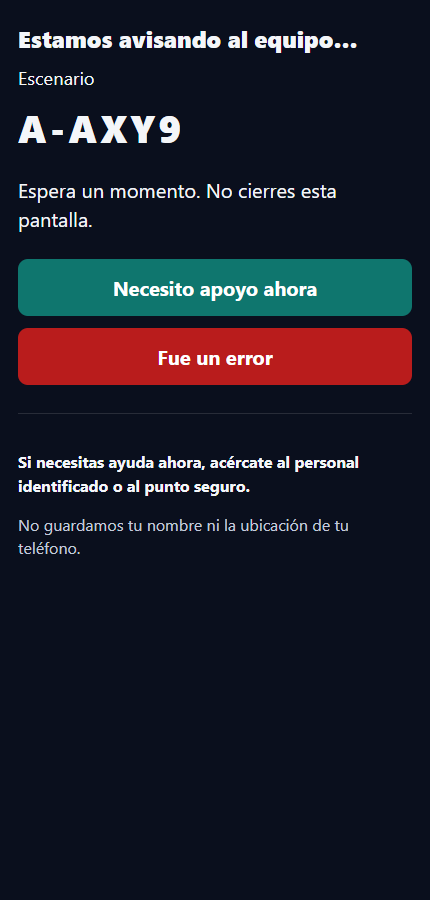
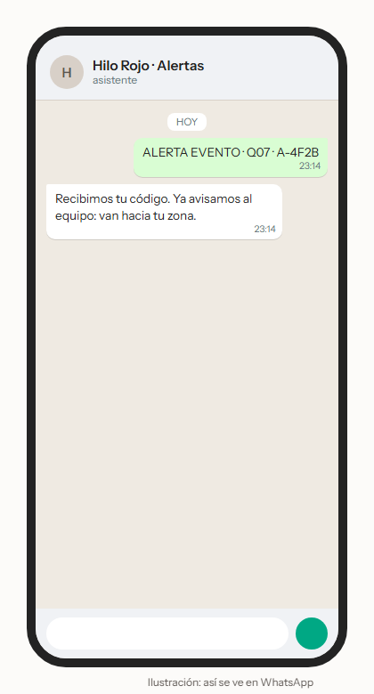
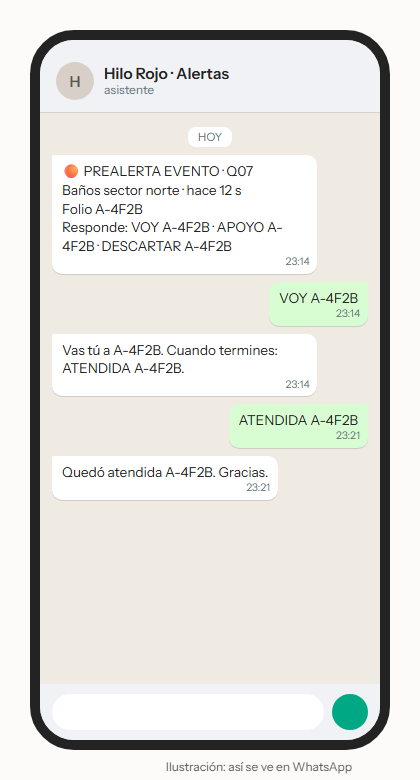
El problema. Una barbería, una consulta o un taller reciben «¿hay hora?» a cualquier hora, y alguien tiene que contestar y anotar.
Es una función extra: se suma al asistente de WhatsApp para el negocio que vende horas, y a un negocio que vende productos no se le agrega.
Todavía no manda recordatorio el día antes, y no usa el calendario que el negocio ya tenga: es una agenda propia.
Qué cambia para el dueño. Las horas se piden y quedan anotadas sin que tenga que contestar el teléfono.
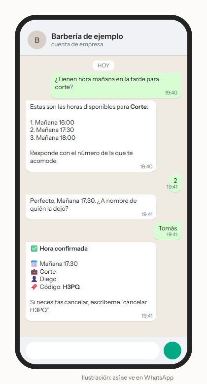
El problema. Todo pasa por el teléfono de una persona. La venta perdida no aparece en ninguna parte, y el dueño no sabe cómo va.
La consola es una página web con usuario y contraseña, sin instalar nada. Tiene cinco pestañas, que son como las lengüetas de una carpeta: Chats, Inventario, Cotizaciones, Métricas y Despacho.
En Cotizaciones se ve el camino de cada venta, en seis etapas:
En Métricas, que son los números de cómo va la venta, están las ventas cerradas, las cotizaciones por día y la venta promedio.
Qué cambia para el dueño. Ve en un solo lugar en qué va cada venta, sin preguntarle a nadie. Cada empresa ve sólo lo suyo: los datos van aislados por cliente.
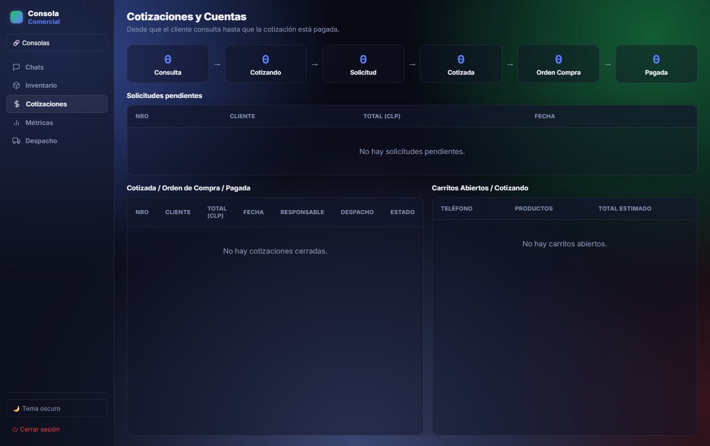
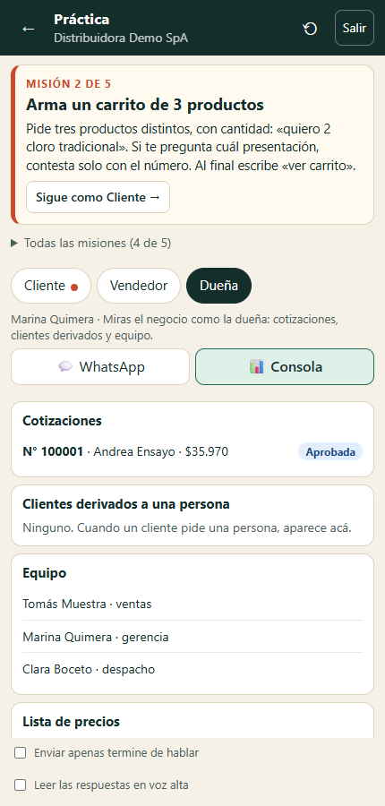
El problema. La lista de precios muchas veces vive en una planilla, y el asistente tiene que usar la misma lista que usa la empresa.
El equipo también puede preguntar stock por WhatsApp, y la consulta le llega al jefe de bodega.
Qué cambia para el dueño. Sigue con su planilla si quiere: no tiene que cargar sus productos uno por uno.
Sin foto: en la copia de prueba el catálogo estaba vacío.
El problema. No todas las empresas necesitan lo mismo.
Un módulo es una parte del asistente que se enciende o se apaga por separado. Cada función se enciende o se apaga por cliente: avisos y escalación, anuncios, tareas, reporte final, registro, catálogo y cotizaciones.
Qué cambia para el dueño. Lo que queda fuera de su plan aparece bloqueado en su consola. Los cambios valen al instante, sin reiniciar nada.
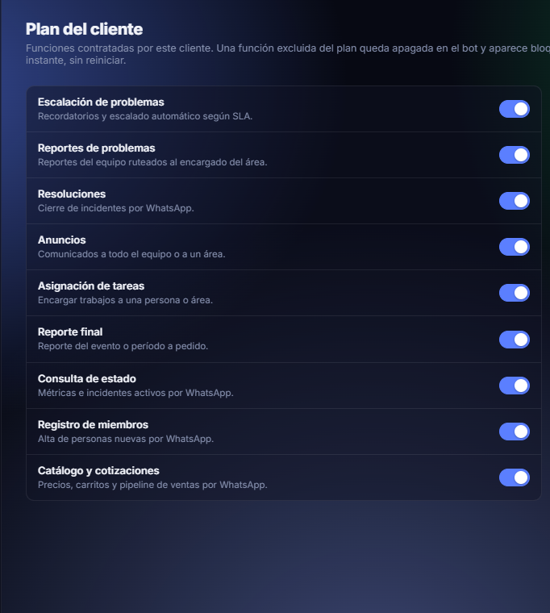
El problema. Cada tipo de negocio, o rubro, habla distinto y se ordena distinto.
El asistente parte de una plantilla por tipo de negocio, un modelo ya armado, y se ajusta con configuración, sin programar. Hay plantillas para insumos de aseo, retail (tiendas que venden al público), construcción, eventos, banquetería, propiedades, salud y gimnasios.
Qué cambia para el dueño. Cambia el vocabulario, las áreas del equipo y las funciones encendidas, para que el asistente se ajuste a su negocio.
El problema. Sin ver lo que hace, el dueño sólo puede compararlo con lo gratis. Y un vendedor nuevo tiene que ensayar antes de hablar con un cliente.
La demo es una prueba en vivo que dura unos 12 minutos:
Se hace con su propia lista de precios o con una empresa inventada (aseo, envases o ferretería); nunca con el catálogo de otro cliente.
La práctica es una página para el celular, sin WhatsApp real. Ahí un vendedor nuevo ensaya con cinco negocios inventados y tres papeles (cliente, vendedor y dueña), con misiones que lo guían.
Qué cambia para el dueño. Ve funcionar el producto antes de hablar de precio.
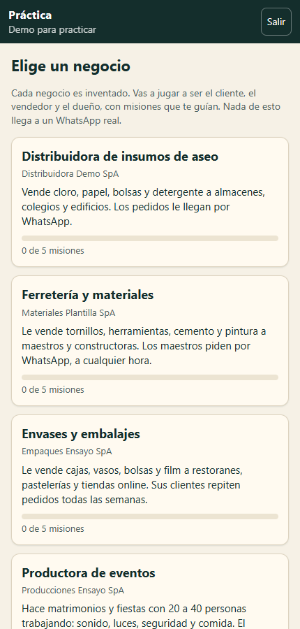
El problema. El dueño pregunta: «¿Dónde quedan los datos de mis clientes?».
Cada empresa tiene su base de datos aparte. Una base de datos es el archivador digital donde quedan guardados los datos, y cada empresa tiene el suyo. Una persona puede pedir que borren sus datos escribiendo «eliminar mis datos» y confirmando. Las notas de voz se pasan a texto y el audio no se guarda.
Qué cambia para el dueño. Tiene una respuesta clara: los datos van aislados por cliente.
Lo que se está construyendo ahora. Sin fecha.
Si nunca trabajaste con una distribuidora, parte por acá: qué es, cómo vende hoy, dónde pierde ventas y qué compra su dueño.
Una distribuidora (o mayorista) le compra en cantidad a los fabricantes y le vende a otros negocios, no al público. Tres ejemplos:
Tienen desde unas decenas hasta unos cientos de productos, cada uno con su precio. Sus clientes compran seguido y en cantidad. Y casi siempre hay una persona que contesta el WhatsApp de la empresa.
Todo eso pasa por una sola persona y un teléfono. Con Hilo Rojo, esos pasos pasan en el mismo chat: el asistente busca el producto, muestra las tres listas juntas y arma la cotización, y el vendedor sólo revisa y aprueba (sección 2).
Muchas distribuidoras publican «cotice por WhatsApp» y casi ninguna lo tiene resuelto. Algunas publican un plazo de respuesta, que es admitir que hay cola.
En una pyme decide el dueño. Y el dueño no compra tecnología. Compra tres cosas:
Antes de comprar, el dueño tiene dudas. Éstas son las de siempre y lo que les contestamos. Cada pieza debería responder una de ellas:
| Lo que piensa el dueño | Lo que le contestamos |
|---|---|
| «¿Y si le contesta cualquier cosa a un cliente mío?» | Los precios salen de su propia lista, y ninguna cotización sale sin que un vendedor suyo la apruebe. Si el cliente pide hablar con una persona, el asistente se calla y le avisa al vendedor. |
| «Mis vendedores no van a aprender otro programa.» | No tienen que aprender nada: siguen en WhatsApp. El rival de verdad no es otro programa, es el sistema que la empresa compró y nadie usa. |
| «Ya tenemos un sistema.» | Ése se queda igual. Hilo Rojo no reemplaza donde facturan: se pone encima y contesta el WhatsApp. |
| «¿Dónde quedan los datos de mis clientes?» | En una base aparte, separada de la de cualquier otro cliente nuestro. |
| «WhatsApp ya trae un asistente gratis.» | Ése contesta, pero no arma la cotización con sus precios ni la deja aprobada por su vendedor. |
| «¿Quién más lo usa?» | «Estamos instalando con las primeras empresas.» |
No sirve para un almacén que vende sólo en el mesón: si el pedido no pasa por WhatsApp, no le cambia el día. Tampoco para una empresa grande con un equipo de atención telefónica y sistema propio: no le duele lo mismo y decide en meses.
Los contactos empiezan el lunes 2-nov. Otros rubros ya estudiados: insumos dentales y veterinarios, licores, textil, repuestos y agro.
El rubro más sólido para mostrar es aseo y envases: las demos inventadas se armaron para ellos.
El mismo asistente sirve a negocios que no son distribuidoras. No son el foco de la campaña de noviembre, pero conviene que sepas cuáles son y qué les duele:
| Rubro | Su problema | Qué le sirve hoy |
|---|---|---|
| Productoras de eventos y equipos que trabajan repartidos (terreno, bodega, reparto, oficina) | Los avisos del equipo se pierden en un grupo; el jefe se entera tarde. | Avisos al encargado, escalación, anuncios, reporte final. |
| Administración de condominios | Residentes que escriben al WhatsApp de la administración; el conserje avisa por otro chat. | Avisos con foto al encargado y escalación. Ya viene luego: QR en un lugar (Punto Rojo). No cubre gastos comunes ni reservas. |
| Talleres mecánicos | Se coordina la hora por WhatsApp; el precio sale después de ver el auto. | Horas y servicios con precio publicado. No sirve para presupuestos que nacen del diagnóstico. |
| Negocios con hora (barbería, consulta, estética) | «¿Cuánto sale?», «¿hay hora?», a cualquier hora. | Respuestas de siempre y agenda de horas (sin recordatorio del día antes). |
Cada producto que viene tiene su público: Pase Rojo, productoras de eventos, discotecas y ferias; Vale Rojo, bares de eventos, festivales y casinos; Bodega Roja, negocios con stock; Punto Rojo, condominios, oficinas, hoteles y locales.
Primero, lo mínimo que hay que saber de WhatsApp para entender este mercado. Después, contra quién competimos y en qué somos distintos. Cada cifra va con su fuente y su fecha; las que no tienen fuente están marcadas y no van en una pieza.
| Cuál | Cómo funciona | Quién lo usa |
|---|---|---|
| WhatsApp, el normal | Una persona habla con otras personas. | Todos. |
| WhatsApp Business, la aplicación gratis | Una pyme atiende desde un teléfono. Tiene catálogo, horario y respuestas rápidas, pero contesta una persona con el teléfono en la mano. | Una barbería, una distribuidora chica. |
| La plataforma de WhatsApp para empresas (la «API») | El número de la empresa queda conectado a un programa, no a un teléfono. El programa recibe los mensajes y los contesta. Es la puerta oficial que abre Meta, la empresa dueña de WhatsApp. | Hilo Rojo y todos los competidores de este capítulo. |
«API» es la sigla en inglés de una conexión entre dos programas. Funciona como un enchufe: por ahí el WhatsApp de la distribuidora le pasa los mensajes al asistente, y el asistente devuelve las respuestas.
Para el cliente de la distribuidora no cambia nada: sigue usando su WhatsApp de siempre y no instala ninguna aplicación.
En la plataforma, Meta cobra por mensaje. Hasta septiembre, contestarle a un cliente que escribió primero era gratis durante 24 horas. Desde el 1-oct-2026, sólo los primeros 1.000 mensajes de respuesta al mes son gratis, y desde el 1.001 se cobra cada uno. Los mensajes que la empresa manda por iniciativa propia, como una promoción, también se cobran, y más caros.
Qué significa para ti: toda oferta de este mercado tiene ahora dos cuentas, lo que cobra el programa y lo que cobra Meta por los mensajes. Por eso nosotros mostramos lo de Meta aparte (sección 5).
En simple. Casi todos los que usan internet en Chile usan WhatsApp, y atender por ahí dejó de ser gratis del todo. Meta confirmó que cobra desde el mensaje 1.001. Cuánto cobra en Chile todavía no lo pudimos confirmar: los montos de abajo son de terceros y no van en una pieza. El asistente básico ya lo regala Meta. Y el dueño compara cualquier mensualidad con el sueldo de una persona.
Tres palabras para leer la tabla. Un mensaje de servicio es la respuesta a un cliente que escribió primero. Un mensaje de utilidad es un aviso sobre algo en curso, como «tu pedido va en camino». Un mensaje de marketing es una promoción.
| Qué | Fuente y fecha |
|---|---|
| WhatsApp lo usa más del 90 % de quienes usan internet en Chile. | Statista (2025), citado en material interno de julio de 2026. |
| Desde el 1-oct-2026, Meta (la dueña de WhatsApp) cobra por responder: los primeros 1.000 mensajes de servicio al mes por número son gratis y desde el 1.001 se cobran. Los mensajes de utilidad enviados dentro de las 24 horas también se cobran desde esa fecha. Responder dentro de 24 horas ya no es gratis. | Documentación para desarrolladores de Meta, leída el 30-oct-2026 (confirmada por Meta). |
| Los montos para Chile: unos US$0,020 por mensaje de servicio y unos US$0,09 por mensaje de marketing. No van en una pieza: la tabla oficial de Meta para Chile está en pesos chilenos y no se pudo leer; el de servicio lo repiten dos medios chilenos y varios proveedores, y el de marketing sólo proveedores. | Radio Agricultura (2-oct-2026) y blogs de proveedores de octubre de 2026 (de terceros, sin confirmar). Mirar la tabla de Meta, mercado Chile, moneda CLP. |
| Atender por WhatsApp cuesta en Chile hasta 25 veces más que en Colombia. | g5noticias.cl, 15-oct-2026. |
| Desde junio de 2026, Meta regala en la app de WhatsApp Business un asistente que contesta preguntas y recomienda del catálogo. El asistente básico ya es gratis: lo que vale es el proceso (cotización aprobada, equipo, registro). | Investigación interna del 25-jul-2026. |
| El dueño compara contra una persona: el sueldo mínimo es $553.553 brutos, antes de descuentos (desde mayo de 2026), y un asistente de ventas, aquí una persona con ese cargo, gana en promedio $481.438. | Ley 21.830 (Diario Oficial, 22-jun-2026); Computrabajo Chile, 14-oct-2026. |
| Sin fuente, no usar: «12 millones de pymes en Latinoamérica», «50.000 distribuidoras en Chile», «se pierde el 30 % de las ventas de noche», «el 70 % de las compras se hace desde el celular». | Material interno de julio a septiembre de 2026, sin fuente citada. |
La competencia en cinco líneas.
1. Un asistente que sólo contesta ya es gratis: lo regala Meta.
2. Las plataformas pagadas sirven para cualquier negocio, y varias suben la cuenta cuando el negocio crece.
3. Las empresas más grandes apuntan más arriba, y las agencias arman bots a medida.
4. No competimos con el sistema donde la pyme factura: nos ponemos encima.
5. Ninguna página de precios revisada el 16-oct publica lo nuestro: una persona aprueba la cotización antes de enviarla.
Hay seis tipos de competidor. Con lo que importa de cada uno:
El detalle, para quien quiera comparar. Precios públicos al 16-oct-2026, sin IVA. Cambian rápido: revisarlos antes de citarlos.
| Tipo | Cómo cobran | En qué somos distintos |
|---|---|---|
| Gratis de Meta | $0 | No conoce las tres listas de precio ni el stock, no arma una cotización que apruebe una persona, no da reportes. |
| Plataformas internacionales con IA | De US$29 a unos US$300 al mes; varias cobran por usuario, por contacto o por cada respuesta de la IA. | Ninguna publica «una persona aprueba el precio antes de enviarlo». Nosotros: sin cobro por usuario. |
| Plataformas latinoamericanas | De US$45 a unos US$400 al mes; la IA suele ser un adicional; algunas cortan al llegar a un tope de conversaciones. | Casi ninguna trae tres listas de precio, cotización con aprobación ni conexión a sistemas chilenos. |
| Asistentes «de empleados digitales» | Sin precio público; implementación desde US$4.900 (2-sep-2025). | Más grande y caro. Nosotros: cotización con aprobación y avisos que suben al jefe, para una pyme. |
| Agencias y bots chilenos | Desde unos $15.000 al mes (bot básico) hasta proyectos de $2 a $3 millones. | El más cercano cotiza contra una planilla, sin aprobación, sin tres listas de precio y sin despacho. |
| Lo que la pyme ya paga (no compite) | De 1,5 a 2 UF al mes, o su equivalente. | No los reemplazamos: nos ponemos encima. La factura se sigue haciendo donde se hace hoy. |
Primero las palabras, después la forma del cobro y por qué es así. El monto todavía no está decidido: lo decide Rob, y por eso ninguna pieza lleva precio.
Hay dos esquemas en conversación y ninguno está decidido. Lo que sí está claro es la forma:
Hilo Rojo SpA nació en julio de 2026. Hoy está instalando con las primeras empresas y todavía no tiene clientes que paguen. El producto lo arma el fundador. Dos vendedores a comisión empiezan a contactar empresas el lunes 2-nov, una por una por WhatsApp, y las primeras demos son el 5 y el 6-nov. El plan de trabajo actual dura 60 días y cierra el 4-dic.
Las metas salen de proyecciones hechas en distintos momentos. Sólo la de octubre sigue en el plan actual.
| Meta | Plazo | De dónde sale |
|---|---|---|
| Primeros clientes que pagan | Noviembre y diciembre de 2026 | Proyección del 27-oct-2026 (plan de 60 días, que cierra el 4-dic). Estimada: depende de que alguien diga que sí. |
| 50 contactos a empresas | Al 12-nov-2026 | Proyección del 27-oct-2026. |
| 50 clientes | Meses 3 a 6 | Proyección de julio de 2026 (material para inversionistas). Ningún plan de octubre la retoma. |
| 250 clientes en la región | Meses 6 a 12 | Proyección de julio de 2026. Ningún plan de octubre la retoma. |
| 500 primeros clientes | Sin plazo | Proyección de septiembre de 2026. Ningún plan de octubre la retoma. |
| Cuándo | Qué |
|---|---|
| Domingo 1-nov | Sesión de identidad visual: logo de Hilo Rojo y de los cuatro productos. |
| Lunes 2-nov | Los vendedores empiezan a contactar empresas. |
| Martes 3-nov | Rob reserva hilo-rojo.cl y punto-rojo.cl, y prueba el usuario de Instagram. |
| Jueves 5 y viernes 6-nov | Primeras demos. |
| 1-dic | Empieza a regir la ley chilena de datos personales. |
| Así sí | Así no |
|---|---|
| Del chat a la cotización, sin cortar el hilo. | «Tu equipo. Coordinado. Solo.» (un afiche viejo, ya borrado) |
| Un vendedor tuyo aprueba antes de que salga el PDF. | «Así el equipo no siente que lo reemplazan». |
| Si internet se corta a mitad del pedido, el carrito no se pierde. | Nombrar la tecnología, la IA o el proveedor que hay detrás. |
| Los datos van aislados por cliente. | «Conforme a la ley de datos». |
El valor de cada color es el código con que un computador lo reconoce, para que salga igual en todas partes.
| Color | Valor | Para qué |
|---|---|---|
| Papel | #fcfbf9 | Fondo |
| Tinta | #232323 | Texto |
| Marca (vino) | #8c1d2e | El hilo, los números, lo destacado |
| Gris | #5c5652 | Texto secundario y «a futuro» |
| Línea | #d8d0c8 | Bordes y rellenos suaves; nunca texto |
Cada una protege una promesa que el producto no cumple o algo que no se le muestra al cliente. Un programa revisa cada pieza pública contra esta lista antes de publicarla.
| Qué no se dice | Por qué |
|---|---|
| El nombre interno, ni los de otros sistemas internos | El cliente sólo conoce Hilo Rojo. |
| Con qué está hecho: la IA, la base de datos o el servidor | No se le dice al cliente con qué se hace. WhatsApp sí, porque es el canal. |
| «Empresas que ya confían», «caso de éxito», testimonios | Hoy no hay clientes que paguen. |
| «Nunca falla», «garantizado las 24 horas», «ningún pedido perdido», «responde en 1 minuto» | No hay un compromiso firmado de disponibilidad ni una prueba de carga. |
| Horas ahorradas, porcentajes de conversión, ahorro en pesos | Ninguna de esas cifras se puede mostrar en una demo. |
| Cualquier precio de un plan | El precio no está decidido. |
| Que cumple la ley de datos personales | El cumplimiento no está cerrado. Se dice «los datos van aislados por cliente». |
| «Reemplaza a tu vendedor» (sí vale «no reemplaza a tu vendedor») | La promesa es justamente que un vendedor aprueba. |
| Nombres de la competencia | No se pelea con nombres en una pieza pública. |
| «Chatbot» | Suena a juguete. Se dice «asistente». |
| Funciones que no existen: pedido mínimo, lista de precios por cliente, validar el RUT, repetir el pedido anterior, cupones, factura o boleta sin un sistema de ventas conectado, pago con tarjeta, pedir un Uber o Rappi, leer el calendario del negocio | No están en el producto. |
En simple. Todavía no hay logo: se rehace el domingo 1-nov y, hasta entonces, todo sale sin logo. El martes 3-nov Rob reserva la dirección del sitio y prueba el usuario de Instagram. Falta el número de WhatsApp de la empresa: sin él no se arma el perfil ni funcionan los botones del sitio. Y hay que reemplazar la política de privacidad publicada por la nueva, ya escrita.
| Qué | Estado al 30-oct |
|---|---|
| Logo de Hilo Rojo y de los cuatro hijos | Se rehace en la sesión del domingo 1-nov. Existe un trazo provisorio del 9-oct (un hilo vino que se curva y termina en un nudo, sobre un cuadro casi negro) y se probaron dos estilos más: no gustaron el trazo grueso de un solo color ni el hilo como un palito con un punto. Hasta entonces, toda pieza sale sin logo, con el nombre escrito en Instrument Serif. |
| Dominio | hilo-rojo.cl, con guion: lo reserva Rob el 3-nov. hilorojo.cl tiene otro dueño. Mientras tanto el sitio vive en una dirección provisoria. |
| Usuario de Instagram | Los tres propuestos (hilorojo, hilo.rojo, hilorojo.cl) están tomados. El 3-nov Rob prueba hilo_rojo (el recomendado, igual al dominio), hilorojo.chile, hilorojo_cl y somoshilorojo. |
| Número de WhatsApp de la empresa | Sin él no se arma el perfil de WhatsApp Business ni funcionan los botones «Escribir por WhatsApp» del sitio. |
| Política de privacidad pública | La publicada habla del producto anterior; hay que reemplazarla por la nueva, ya escrita. |
Lo decidió Rob el 29-oct: WhatsApp uno a uno, escrito a mano (nunca difusión masiva), visita en persona, LinkedIn personal, el sitio como destino e Instagram con una sola cuenta. Sin correo en frío ni anuncios pagados hasta el primer cliente.
En simple. Vendemos de a una empresa por vez. Desde el lunes 2-nov, los vendedores escriben a mano por WhatsApp. También están la visita en persona y LinkedIn. Instagram es una sola cuenta y deriva los mensajes a WhatsApp. El sitio es adonde llega quien quiere saber más. Correo en frío (a empresas que no nos conocen) y anuncios pagados, no hasta el primer cliente.
Canal por canal:
| Canal | Estado | Qué pieza existe | Lo aprendido |
|---|---|---|---|
| WhatsApp uno a uno | Es el canal principal; nada enviado todavía. Desde el 2-nov. | Secuencia de tres mensajes (primero, día 3 y día 7), con respuestas a las preguntas típicas; 61 primeros mensajes escritos por empresa. | El primer mensaje no pide una reunión: invita a probar algo de 10 a 15 minutos. Sin enlaces, adjuntos ni precio. De lunes a viernes, de 9 a 19. Un texto masivo hace que Meta marque el número. |
| Vendedores a comisión | Preparándose: inducción, exámenes y una demo de prueba antes de recibir empresas. | Kit del vendedor, guía de estudio, hoja de una página. | Nadie contacta sin haber aprobado la demo de prueba. |
| Visita en persona | Planeada. | El brochure de una página. | No se graban las reuniones; el vendedor deja una nota de voz al salir. |
| Textos listos para el perfil del fundador, de los vendedores y de la empresa, más cuatro publicaciones semanales. | Problema; cómo funciona en 3 pasos; por qué aprueba una persona; cierre. | Sin hashtags, precios ni clientes. | |
| Planeado; falta el usuario. | Dos biografías, 30 días de publicaciones, tres plantillas y cinco respuestas tipo. | Instagram no cotiza: los mensajes se derivan a WhatsApp. | |
| Perfil de WhatsApp Business | Textos listos; falta el número. | Nombre, descripción, horario, bienvenida, ausencia y respuestas rápidas. | La respuesta rápida de precio nunca da un monto. |
| Lista de espera | Texto listo; falta crear el formulario. | Formulario de Google para los cuatro productos en camino, con aviso de datos. | «Todavía no, y sin fecha.» |
| Sitio | Existe en una dirección provisoria; falta el número, el formulario, el logo y la política nueva. | Portada, página para distribuidoras y una página por cada producto en camino. | Ver sección 8. |
| Folleto | Existe, de seis páginas. | «Qué hacemos», pensado para quien podría vender. | No es para el cliente final. |
| Correo a empresas | Descartado por ahora. | — | Sin dominio propio cae en spam y se ve personal. Se retoma con dominio. |
| Anuncios pagados de Meta | Descartados hasta tener un caso que mostrar. | — | Sin testimonio, es gastar plata sin resultado. |
| Referidos | Cuando haya precio. | — | — |
Todo usa ya la paleta y las letras de arriba, y todo sale sin logo.
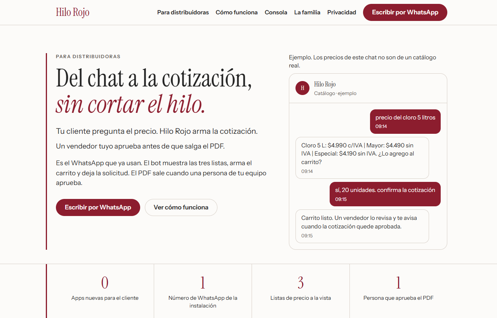
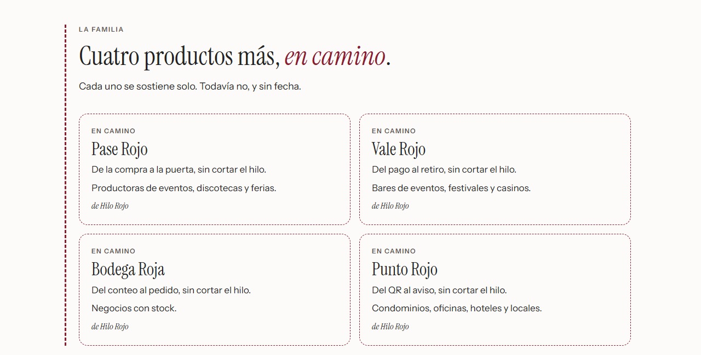
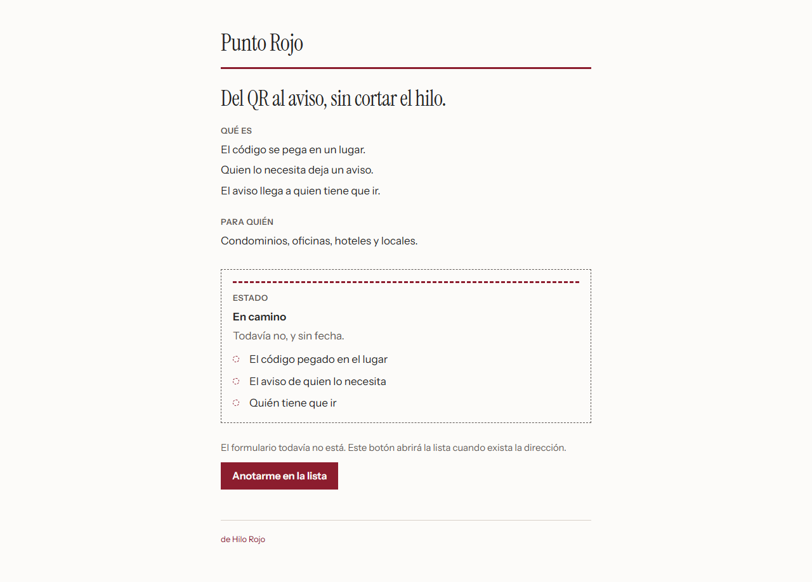
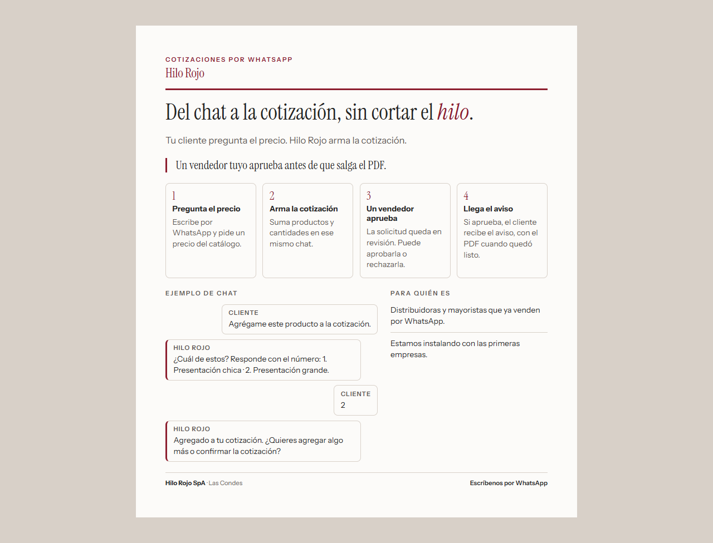
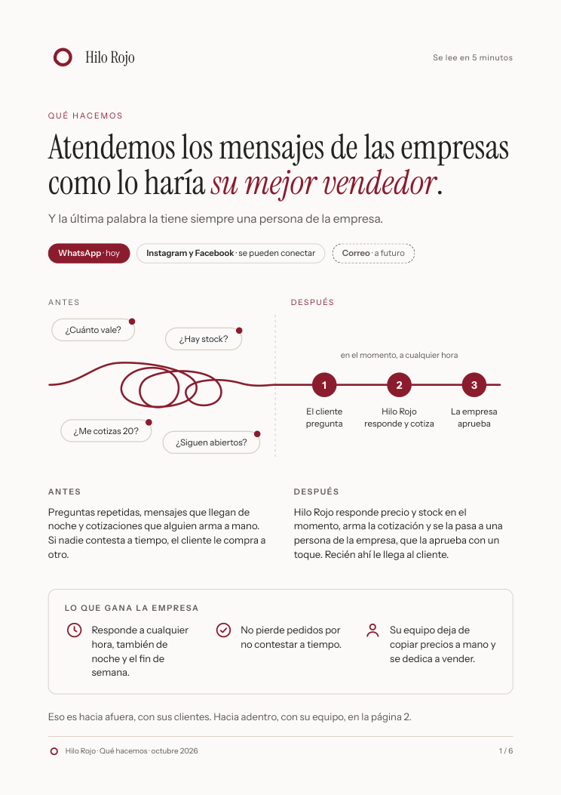
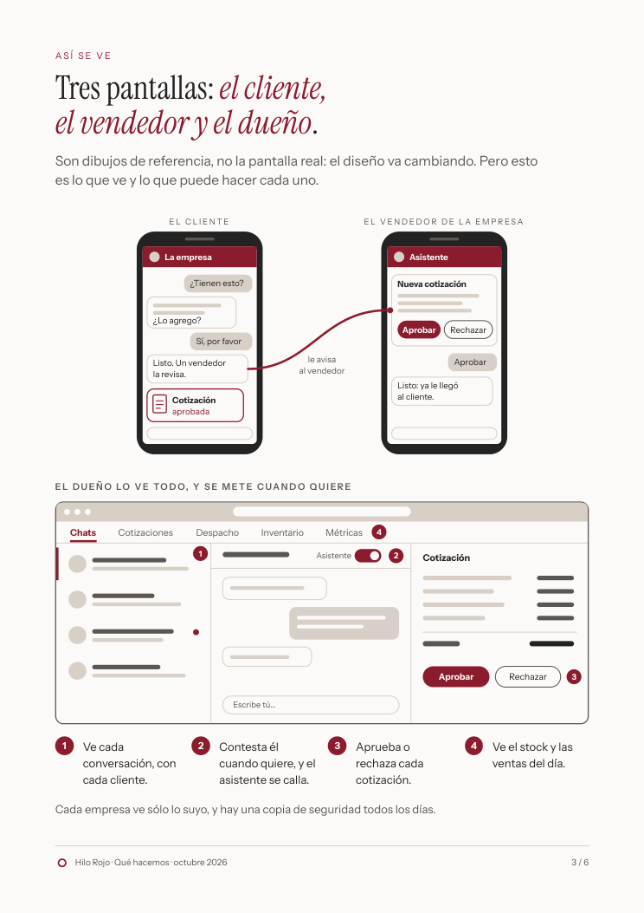
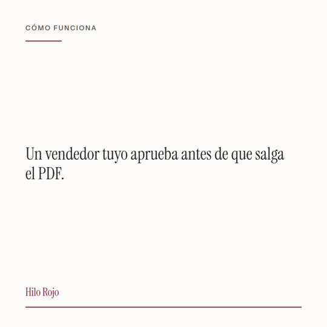
Las tres plantillas existen en 1080 × 1080 y 1080 × 1350. Aquí van con frases ya aprobadas en lugar de sus marcadores.
La lista vive en el kit del vendedor, que es el set de documentos con que se prepara cada vendedor, y está revisada contra el programa. Aquí va en lenguaje de publicidad.
| No digas | Di |
|---|---|
| Que atiende garantizado las 24 horas, que nunca falla | «Atiende a cualquier hora.» |
| Que ya hay empresas que lo usan, o testimonios | «Estamos instalando con las primeras empresas.» |
| Que cumple la ley de datos | «Los datos van aislados por cliente.» |
| Que vende solo, que cierra ventas, que reemplaza al vendedor | «Un vendedor tuyo aprueba antes de que salga el PDF.» |
| Que factura o emite boletas por su cuenta, o que cobra con tarjeta | Emite cotizaciones. La factura y la boleta salen conectándose a la API del sistema de ventas de la empresa. El pago es por transferencia. |
| Que funciona en Instagram, Facebook o por correo | «Hoy el canal es WhatsApp.» |
| Precios distintos para cada cliente, pedido mínimo, cupones, repetir el último pedido | Tres listas de precio para todos: detalle, mayor y especial. |
| Que lee la planilla en vivo, el correo o el calendario del negocio | El catálogo se carga y se actualiza cada mañana. |
| Que recuerda la hora el día antes | La hora queda anotada y el dueño la ve. |
| Que arma las rutas del reparto o pide el delivery | Avisa el destino a quien reparte. |
| Fechas para Pase, Vale, Bodega o Punto Rojo | «Todavía no, y sin fecha.» |
| Cifras de ahorro o de conversión | Lo que se ve en la demo. |
Cuatro encargos. Cada uno con lo que ya existe, lo decidido, lo abierto y las preguntas que queremos que respondas.
Existe: paleta de cinco colores con contraste medido, dos letras, la metáfora del hilo, tres plantillas, un trazo provisorio que no gustó.
Decidido: el nombre y la familia; vino sobre papel; lo punteado es «todavía no»; «de Hilo Rojo» chico en los hijos.
Abierto: el logo de Hilo Rojo y de cada hijo; si cada hijo tiene color propio; cómo se ve el hilo que los une.
Existe: la secuencia de WhatsApp, 61 primeros mensajes, el perfil de WhatsApp, LinkedIn, el brochure, el folleto.
Decidido: uno a uno y a mano; sin difusión masiva, correo en frío ni anuncios pagados hasta el primer cliente; el precio después de la demo.
Abierto: el orden de los canales después del primer cliente; qué pieza deja el vendedor en la visita; la primera campaña con un caso real.
Existe: dos biografías, 30 días de publicaciones con hora y formato, tres plantillas, respuestas tipo, textos para LinkedIn y el perfil de WhatsApp Business.
Decidido: una sola cuenta de Instagram; una publicación al día; una de cada cinco muestra un producto en camino; los mensajes se derivan a WhatsApp.
Abierto: el usuario de Instagram (3-nov); la foto de perfil (depende del logo); quién publica y con qué herramienta.
Existe: la portada, la página para distribuidoras y las cuatro páginas de los hijos, con los textos ajustados a lo que se puede prometer.
Decidido: el titular, la bajada y la prueba; «en camino, sin fecha» con lista de espera; sin precios.
Abierto: el dominio (3-nov); el número de WhatsApp; el formulario de espera; el logo; la política de privacidad nueva; sacar la franja de cuatro cifras (decidido); preguntas frecuentes.
No son producto ni se prometen. Te las contamos porque pueden cambiar cómo nos presentamos más adelante.